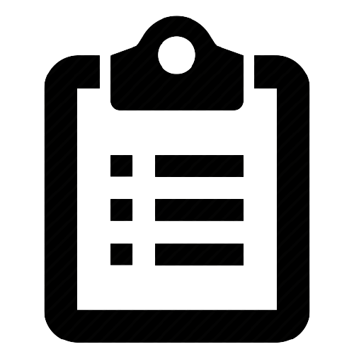

<nav class="navbar navbar-expand-lg navbar-dark bg-blue">
    <div class="container-fluid">
      <a class="navbar-brand" href="index.html">
        
      </a>
      <button class="navbar-toggler navbar-toggler-right border-0 p-0" type="button" data-toggle="collapse" data-target="#navbarCollapse" (click)="toggleNavbarCollapsing()" aria-controls="navbarCollapse" aria-expanded="false" aria-label="Toggle navigation">
        <span class="navbar-toggler-icon"></span>
      </button>
      <div class="collapse navbar-collapse" [class.collapse]="navbarCollapsed" id="navbarCollapse">
        <ul class="navbar-nav mr-auto nleft">
          <li class="nav-item" routerLinkActive="active">
            <a class="nav-link" routerLink="/home" >Home</a>
          </li>
          <li class="nav-item" *ngIf="isloggedin" routerLinkActive="active">
            <a class="nav-link" [routerLink]="['/users',selectedlistId,'viewTask']" >DashBoard</a>
          </li>
        </ul>
   
        <ul class="navbar-nav ml-auto nright">
            <li class="nav-item" *ngIf="!isloggedin" routerLinkActive="active">
                <a class="nav-link" routerLink="/register" >Register</a>
              </li>
          <li class="nav-item" *ngIf="!isloggedin" routerLinkActive="active">
            <a class="nav-link" routerLink="/login">Login</a>
          </li>

          <li class="nav-item" *ngIf="isloggedin" routerLinkActive="active">
            <button type="submit" class="btn btn-success" (click)="onLogout()">Logout</button>  
          </li>
      </ul>
  
      </div>
    </div>
  </nav>